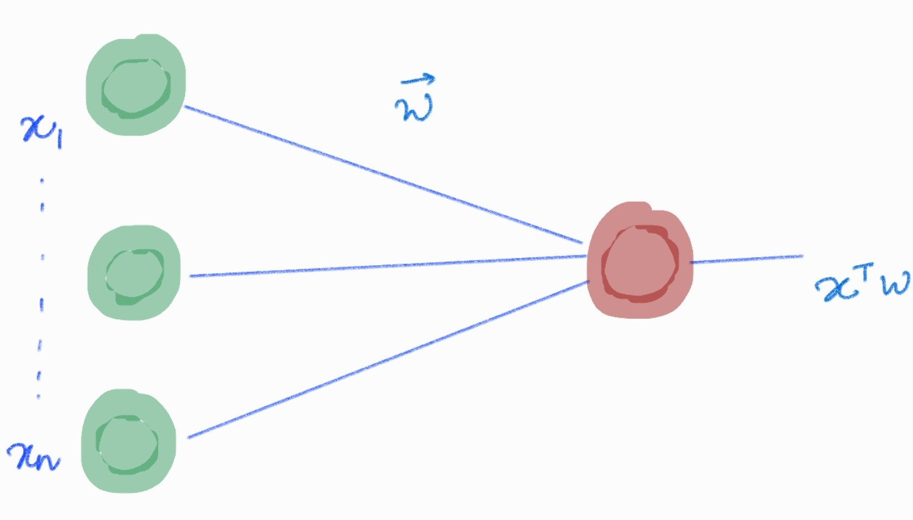
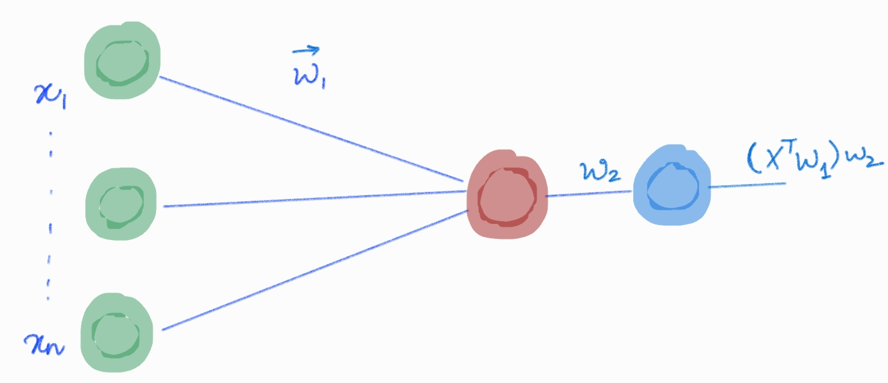

class: center, middle # On the Optimisation of Deep Networks ## Implicit Acceleration By Overparametrization Presenter: Sampad Mohanty --- ### Breakdown 1. Introduction 2. Results 3. Warmup: $l_p$ Regression 4. Linear Neural Networks 5. Implicit Dynamics of Gradient Descent 6. Experiments --- ### Introduction #### <u>General consensus:</u> Depth $\rightarrow$ improves expressiveness, _but_ complicates optimisation. #### <u>This paper has a rather counterintuitive message:</u> Depth $\rightarrow$ accelerate optimisation Acceleration by depth $\equiv$ implicit momentum and adaptive_regularisation (from AdaGrad) --- ### Introduction * Increasing depth $\rightarrow$ increased expressiveness/ representational power * How to tell improvement in optimisation arose from acceleration and not better expressivity? --- ### Introduction * Increasing depth $\rightarrow$ increased expressiveness/ representational power * How to tell improvement in optimisation arose from acceleration and not better expressivity? * Proposed solution is to analyze Linear Neural Networks (adding depth doesn't change expressivity) * Adding depth = replacement of a matrix parameter by a product of matrices (overparameterization) --- ### Results * GD on overparametrised by depth $\equiv$ GD on shallow 1-layer NN while employing particular preconditioning scheme. * The preconditioning promotes movement along directions already taken by the optimisation * This can be seen as an acceleration procedure that combines momentum with adaptive learning rates. --- ### Results * Even on simple convex problems such as linear regression with $l_p$ loss, p > 2, overparameterization via depth can significantly speed up training * In some experiments, not only did over- parameterization outperform naıve gradient descent, but it was also faster than two well-known acceleration methods - AdaGrad and AdaDelta * Implicit acceleration due to overparametrisation by depth maybe somewhat orthogonal to explicit acceleration schemes --- ### Warmup: $l_p$ Regression $$ L(\mathbf{w}) = \mathbb{E}_{(x,y)\sim S} \big[ \frac{1}{p}(\mathbf{x^T w} - y)^p \big] $$ </img> --- ### Warmup: $l_p$ Regression $$ L( \mathbf{w1}, w2 ) = \mathbb{E}_{(x,y)\sim S} \big[ \frac{1}{p}(\mathbf{x^T w_1}w_2 - y)^p \big] $$ </img> ==================================================================== * Observe, $ \mathbf{w = w_1}w_2 $ --- ### Warmup: $l_p$ Regression $\nabla_w := \mathbb{E}\big[ (\mathbf{x^T w} - y)^{p-1} \mathbf{x}\big]$ (vec) $\nabla_{\mathbf{w_1}} := \mathbb{E}\big[ (\mathbf{x^T w_1}w_2 - y)^{p-1} \;\; w_2\mathbf{x}\big]$ (vec) $\nabla_{w_2} := \mathbb{E}\big[ (\mathbf{x^T w_1}w_2 - y)^{p-1} \;\; \mathbf{w_1^T x}\big]$ (scaler) ==================================================================== Observe, $\mathbf{\nabla w_1} = w_2 \; \mathbf{\nabla w} $ $\nabla w_2 = \mathbf{w_1^T \; \nabla w} $ --- ### Warmup: $l_p$ Regression GD over $L(\mathbf{w_1}, w_2)$ with learning rate $\eta$ $ \mathbf{w1} \leftarrow \mathbf{w1} - \eta \nabla_{\mathbf{w_1}}$ $ w2 \leftarrow w2 - \eta \nabla_{w_2}$ --- ### Warmup: $l_p$ Regression $$ \mathbf{w} = \mathbf{w_1} w_2 = ( \mathbf{w_1 - \eta \nabla w_1})(w_2 - \eta \nabla w_2) $$ $$ = \color{green}\mathbf{w_1}w_2 \color{black} - \eta ( w_2 \color{red} \nabla \mathbf{w_1} \color{black} + \mathbf{w_1} \nabla w_2) + \overbrace{\mathcal{O}(\eta^2)}^{\text{negligible when } \eta \text{ is small} } $$ $$ = \mathbf{w} - \eta ( w_2^2 \nabla \mathbf{w} + \mathbf{w_1} \nabla w_2) $$ $$ = \mathbf{w} - \eta ( w_2^2 \nabla \mathbf{w} + w_2^{-1} \color{green} w_2 \mathbf{w_1} \color{black} \nabla w_2) $$ $$ = \mathbf{w} - \eta ( w_2^2 \nabla \mathbf{w} + w_2^{-1} \mathbf{w} \nabla w_2) $$ ==================================================================== Recall, $\mathbf{w} = \color{green} \mathbf{w_1}w_2$ (used) $\color{red} \mathbf{\nabla w_1} \color{black} = w_2 \; \mathbf{\nabla w} $ (used) $\nabla w_2 = \mathbf{w_1^T \; \nabla w} $ --- ### Warmup: $l_p$ Regression $$ \mathbf{w} = \mathbf{w} - \eta ( w_2^2 \nabla \mathbf{w} + w_2^{-1} \mathbf{w} \nabla w_2) = \mathbf{w} - \rho \nabla \mathbf{w} - \gamma \mathbf{w} $$ where, $\rho = \eta \; w_2^2$ (effective learning rate, varies/adapts) and $\gamma = \eta \; w_2^{-1} \; \nabla w_2 $ (effective momentum rate, varies/adapts) - Observe that $\rho$ and $\gamma$ are not affected by $\mathbf{w_1}$ or $\mathbf{ \nabla w_1}$ but by the extra layer parameter $w_2$ and hence result exclusively due to overparametrisation. - What can we say about the learning rate as the training continues? Since usually, the parameters are initialised near zero and then descends away from zero, we can say that the learning rate becomes bigger as $w_2$ drifts aways from zero. - About the momentum, the momentum has a tendency to proceed in the direction of $\mathbf{w}$, i.e a tendency to move in the direction of the current position of the parameters. --- ### Warmup: $l_p$ Regression $$ \mathbf{w} = \mathbf{w} - \rho \nabla \mathbf{w} - \gamma \mathbf{w} $$ Since $\mathbf{w_1}$ and $w_2$ are initialized close to zero, so is $\mathbf{w = w_1}w_2$ This implies that at all iterations, $\mathbf{w}$ is a weighted(linear) combination of past gradients. Hence the current $\mathbf{w}$ lies in the span of the past and current gradients. Hence there exist $\mu(t,\tau)$, s.t. $$ \mathbf{w}^{t+1} \leftarrow \mathbf{w}^{t} - \rho^t \mathbf{\nabla w} - \sum_{\tau=1}^{t-1}\mu^{(t,\tau)}\nabla \mathbf{w^{\tau}} $$ --- ### Linear Neural Nets |Single Layer| Multi layer| |------------|------------| |  |  | | $\phi^1(x) := Wx, W \in \mathbb{R}^{k \times d} $ | $ \phi^N(x) := W_N...W_2W_1x$ | | $L^1(W)$ | $L^N(W_1,W_2,..,W_N)$ | --- ### Effective Single Layer Network ||| |-|-| ||| Effective end to end weight ($W_e$) $W_e = W_N....W_2W_1$ Effective loss of a multilayer linear network - $L^N(W_1,W_2,...,W_N) = L^1(W_N....W_2W_1)$ --- ### Implicit Dynamics of Gradient Descent  $\lambda = $ weight decay coefficient Side Note : $\lambda$ comes from gradient descent on objective with regularisation - $$ h = f + \frac{\lambda}{2}||W||^2 $$ $$ \nabla h = \nabla \bigg( f + \frac{\lambda}{2}||W||^2 \bigg) = \nabla f + \lambda W $$ $$ W \leftarrow W - \eta \nabla h = W - \eta \nabla f - \eta \lambda W = (1 - \eta \lambda)W - \eta \nabla f $$ Hence GD with non-zero wight decay coefficient is equivalent to GD on objective + $L_2$ regularisation --- ### Gradient Flow: Small learning rate assumption If learning rate is small, i.e $\eta^2 \approx 0$, then  --- ### Gradient Flow: Initialisation assumption   --- ### Gradient flow: Update rule   --- ### Gradient flow: Update rule (vectorised form)  --- ### Empirical Validation: L2 and L4 Regression Do the assumptions (small learning rate, near zero init) hold in practice?  - Emulation follows closely. - Network width does not matter (hidden layer of size 1 suffice and hence accleration can be achieved without much compute overhead). - Faster convergence with depth (same lr=$10^{-3}$ for all networks, which authors point out is not a fair comparision - lr must be tuned independently for all the models) --- ### Empirical Validation: per model learning rates  - Per model tuned learning rates - For $l_2$ loss, depth slightly hinders optimisation (only for regression problems, they have an example 2 point dataset to show this) - For $l_4$ loss it accelerates --- ### How does implicit acceleration compare to explicit schemes?  - Depth 3 converges faster than AdaGrad and AdaDelta, but not Adam (left) - Increasing depth helps convergence when used with Adam, suggesting implicit acceleration due to depth may be somewhat orthogonal to explicit acceleration. --- ### Is depth so good? Why not make it deeper? - vanishing gradients due to conditions of zero-init and preconditioning scheme in $(10)$  --- ### Experiment: MNIST  - Tensorflow default convnet mnist example (hardcoded hyperparams) - added 1 linear hidden layer to all dense layers (15% extra params) --- ### Thanks ### That's it, thank you --- ### Weigth update in single output Case (k=1)  - adaptive learning rate (gets more confident as W moves away from origin) - adaptive momentum (amplifies gradient along in the current position by a factor of N)